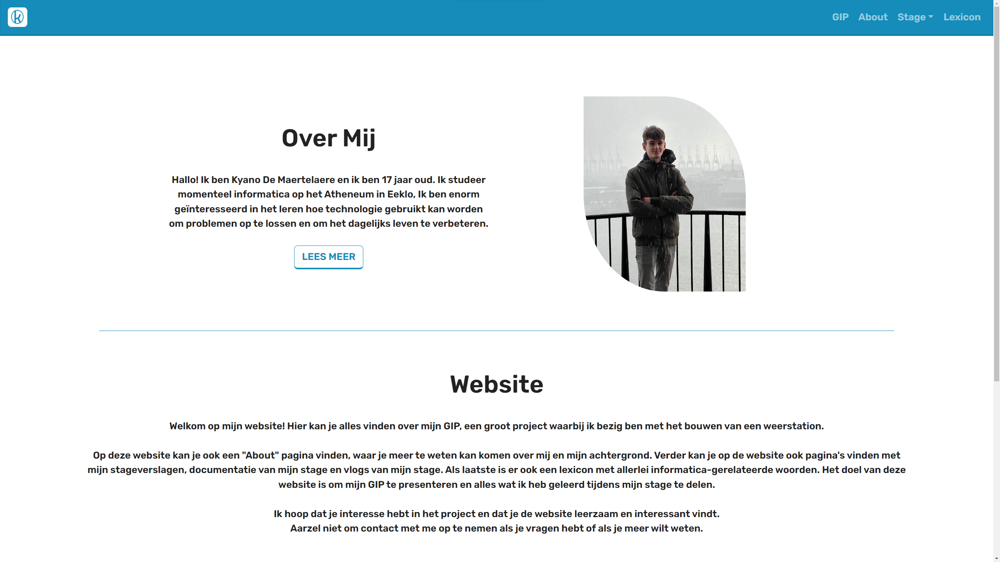

Kyano's Website
Home
Projecten
(current)
Gym
Mijn School Projecten
Hier zal ik al projecten tonen.

Dit is mijn Eindwerk website van mijn eindwerk, Mijn weerstation. Deze website is vooral voor documentatie & andere vereisten van het project.
Dit is de website van mijn eindwerk. Hierop werd de data van mijn weerstation in grafieken live geupdate & weergegeven.
Dit was mijn examen webtechnieken, we hadden de opdracht om een website te maken om huizen te verhuren, ik heb een review & contact systeem ingebouwd met een calender en nog een paar dingen. Ook is alle data van de website uit een Json bestand